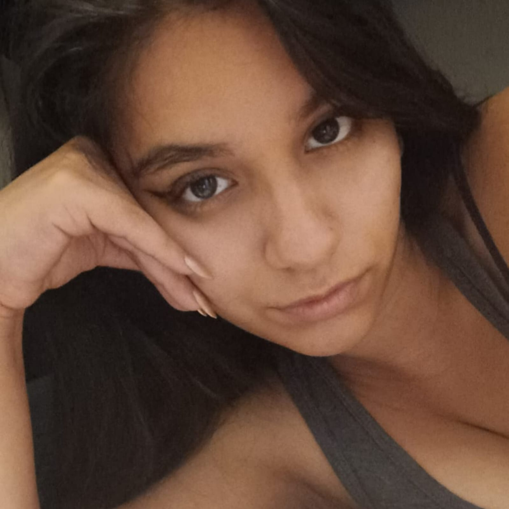
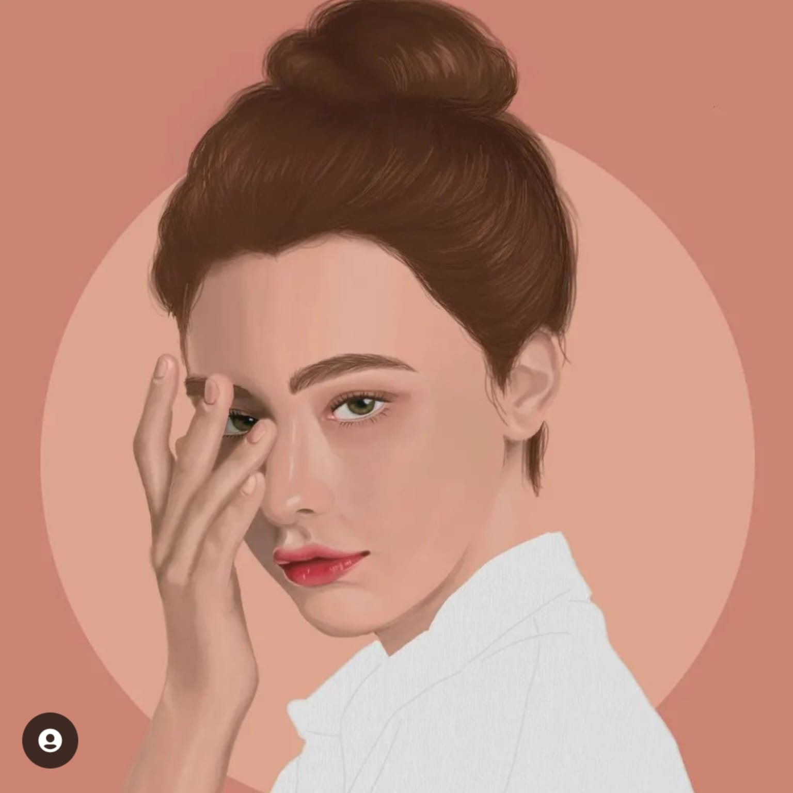
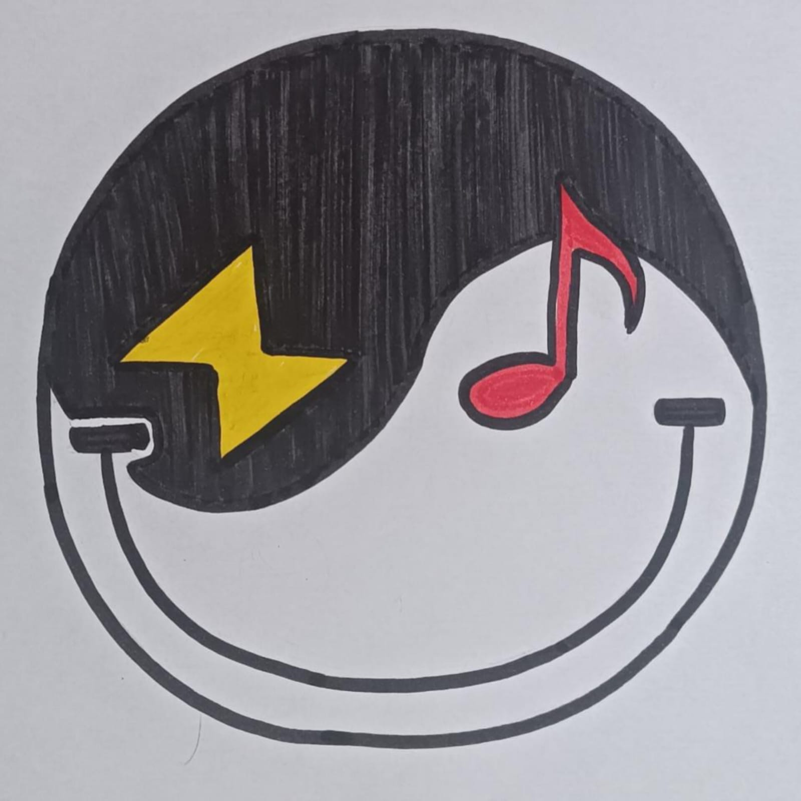

'No es la fuerza, sino la perseverancia de los altos sentimientos la que hace a los hombres superiores
-Nietzsche
|  | Sobre mí: Tengo 23 años, soy estudiante de Dirección y Diseño Gráfico, me encuentro en 7mo ciclo, actualmente me encuentro haciendo prácticas en una empresa de skincare, amo dibujar, jugar videojuegos y hacer deporte |
|  | Inside Dangerous Como mencioné, me gusta mucho dibujar y lo hago bien, con toda la humildad del caso, entonces tengo una cuenta de dibujos en Instagram, mi proposito es subir más a menudo, ya que me tomo muchísimo tiempo entre dibujos, lo cual no es bueno porque no practico como debería, además de eso, tengo pensado hacer dibujos con mi rostro para un proyecto personal, en el cual explico mi mundo interno a través del dibujo conceptual, aún es un proyecto en frío pero ya estoy empezando a plantear las piezas |
|  | Sobre la misión: Este dibujo representa el ying y el yang, ya que todos sin importar quienes seamos o lo que hagamos tenemos un lado bueno, como un lado malo, virtudes y defectos, que es lo que nos hace humanos; sin embargo, eso no nos condiciona a no mantener una actitud positiva, una sonrisa. En los ojos de nuestra cara feliz, decidimos colocar la música, ya que todos en el equipo somos amantes de la misma, consideramos que no podemos existir sin escuchar música ya que la oímos todo el día y el rayo, como símbolo de actividad, ya que al tener trabajo, clases y vamos al gym, por lo cual, no paramos desde temprano hasta la noche, siendo muy activos durante el día |